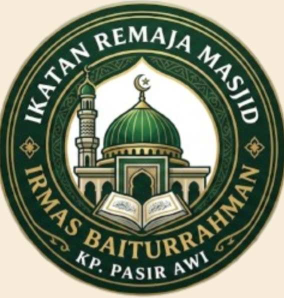
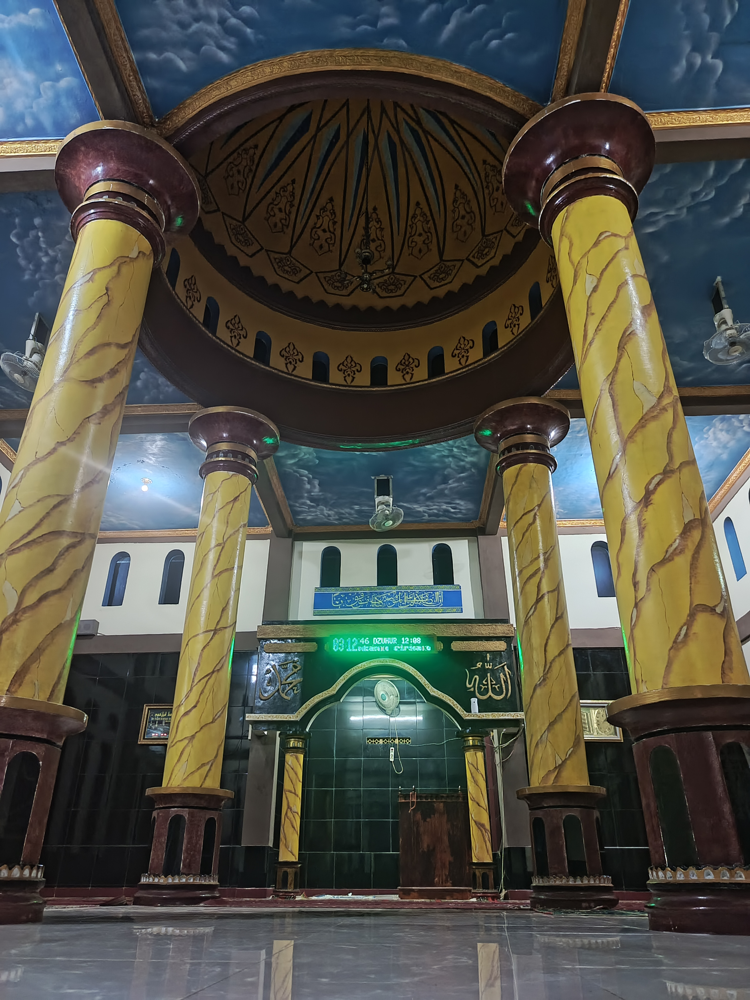
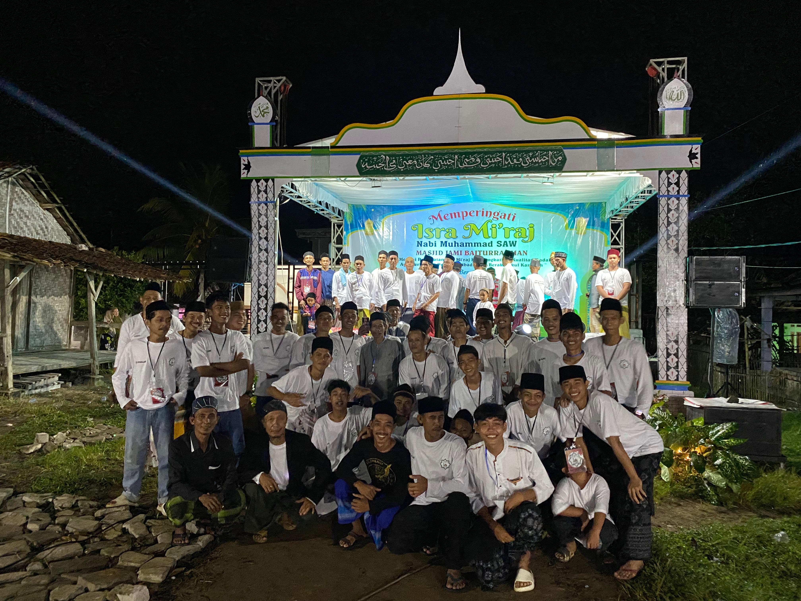
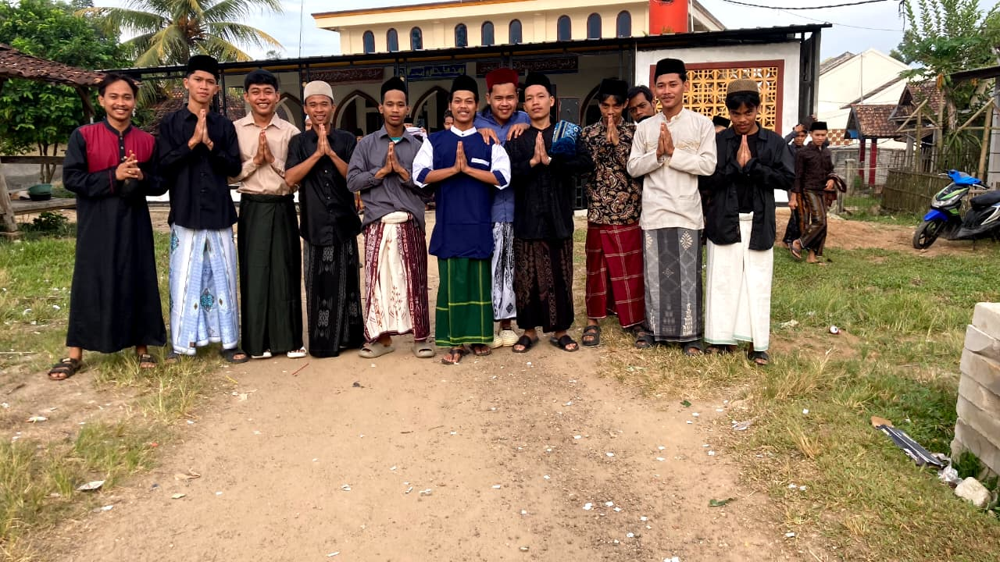
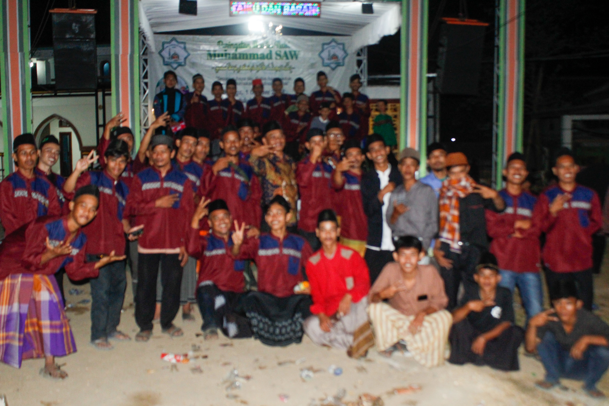
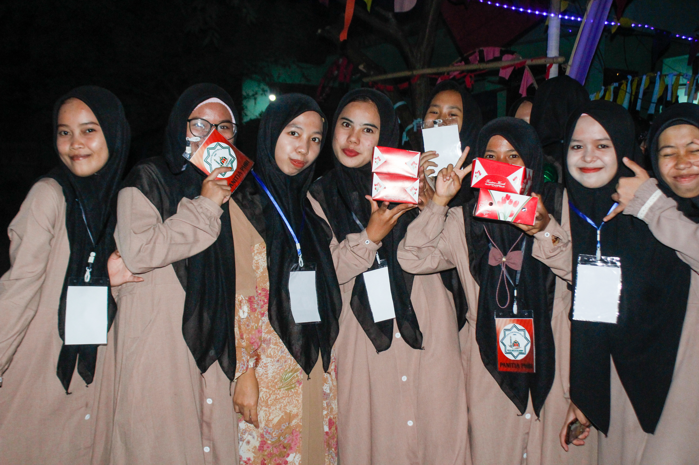
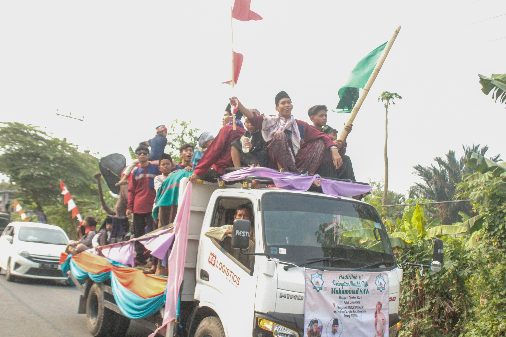
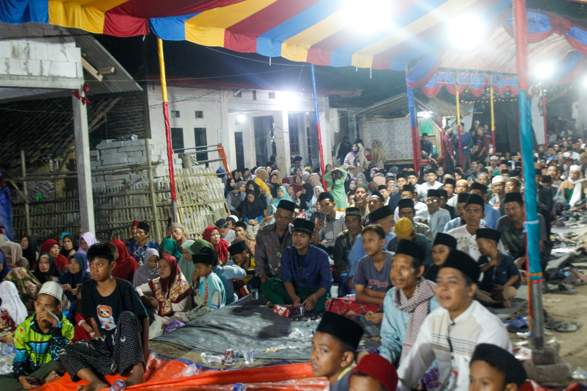
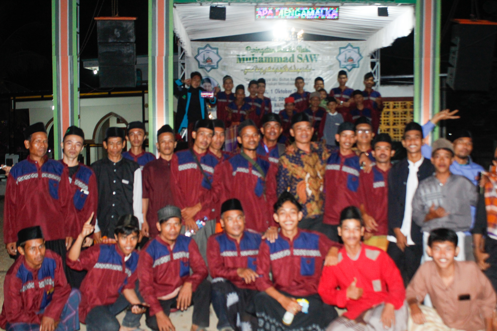

01
Keagamaan
Kajian, pengajian, kegiatan PHBI, tadarus, dan kegiatan keislaman lainnya.

IRMAS JAMI BAITURRAHMAN
Wadah generasi muda masjid untuk belajar, berkarya, beribadah, bersilaturahmi, dan memberikan manfaat bagi masyarakat Kp Pasir Awi.
Ikatan Remaja Masjid Jami Baiturrahman merupakan wadah bagi para pemuda untuk berkontribusi dalam kegiatan keagamaan dan sosial di Kp Pasir Awi.

IRMAS Jami Baiturrahman menjadi tempat berkumpulnya generasi muda dalam menjalankan berbagai kegiatan positif, keagamaan, pendidikan, sosial, dan kemasyarakatan.
Kami percaya bahwa pemuda memiliki peran penting dalam menjaga semangat keislaman serta membangun lingkungan yang penuh kebersamaan.
Berbagai kegiatan yang menjadi bagian dari perjalanan IRMAS Jami Baiturrahman.
Kajian, pengajian, kegiatan PHBI, tadarus, dan kegiatan keislaman lainnya.
Berbagi kepada masyarakat, santunan, gotong royong, dan kegiatan sosial.
Membentuk pemuda yang aktif, kompak, kreatif, dan memiliki kepedulian terhadap masjid.
Kegiatan belajar dan pembinaan untuk meningkatkan pengetahuan serta keterampilan.
Menyebarkan pesan kebaikan melalui kegiatan dan media yang positif.
Mengabadikan berbagai momen dan perjalanan kegiatan IRMAS Jami Baiturrahman.
Menghidupkan suasana masjid dengan berbagai kegiatan keagamaan bersama para pemuda.
Membangun hubungan yang erat antar pemuda melalui kegiatan dan kebersamaan.
Menghadirkan kegiatan sosial sebagai bentuk kepedulian kepada sesama.
Berpartisipasi dalam berbagai kegiatan peringatan hari besar Islam di lingkungan masjid.
Beberapa momen kebersamaan IRMAS Jami Baiturrahman.



Bersama-sama menjalankan amanah dan menghidupkan kegiatan masjid.




"Sebaik-baik manusia adalah yang paling bermanfaat bagi manusia."— HR. Ahmad
Untuk informasi kegiatan, dokumentasi, atau ingin ikut berkontribusi bersama IRMAS Jami Baiturrahman, silakan hubungi kami.
JAMI BAITURRAHMAN